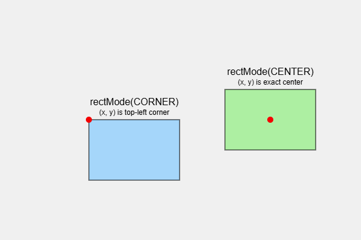

00 — Getting Started: How Computer Graphics Work
Drawing modes: CORNER vs CENTER
That last point matters enough that p5 lets you change it. rectMode() and ellipseMode()
control how the position arguments to rect() and ellipse()/circle() are interpreted:
rectMode(CORNER); // the default: (x, y) is the top-left corner
rect(50, 50, 120, 80); // a 120×80 rectangle with its corner at (50, 50)
rectMode(CENTER);
rect(50, 50, 120, 80); // the same size rectangle, now centred on the point (50, 50)The same applies to ellipse() (and, since circle() is really just an ellipse with equal width
and height, circle() too) — except its default is already CENTER, the opposite of
rect()'s default. That inconsistency is worth knowing about deliberately, rather than
discovering it by accident: rect(x, y, w, h) and circle(x, y, d) place their shapes
differently by default, even though both take (x, y) as their first two arguments.
ellipseMode(CORNER);
ellipse(50, 50, 120, 80); // now the ellipse's bounding box has its corner at (50, 50)A mode set with rectMode()/ellipseMode() is state, exactly like fill() or noStroke() —
it applies to every matching shape drawn after it, until changed again.

Figure: two identical rectangles side by side, one drawn with rectMode(CORNER) and one with
rectMode(CENTER) from the same (x, y) coordinates, with the reference point marked on both so
the difference in placement is visible.